第七届理工杯大赛圆满结束！
第七届理工杯大赛圆满结束！
近期理工杯已经圆满结束，从开始到结束，我们付出了很多，但我们收获的更多。
比赛前每个团队都努力的制作着他们的小车，欢乐与严肃并存的氛围也增强了本次比赛的意义！
团队与团队之间相处融洽，也充斥着友谊第一的精神！2021年第七届理工杯机器人大赛缓缓落幕。
Part. 1
比赛现场
比赛现场队员不断调试机器，参加检录。
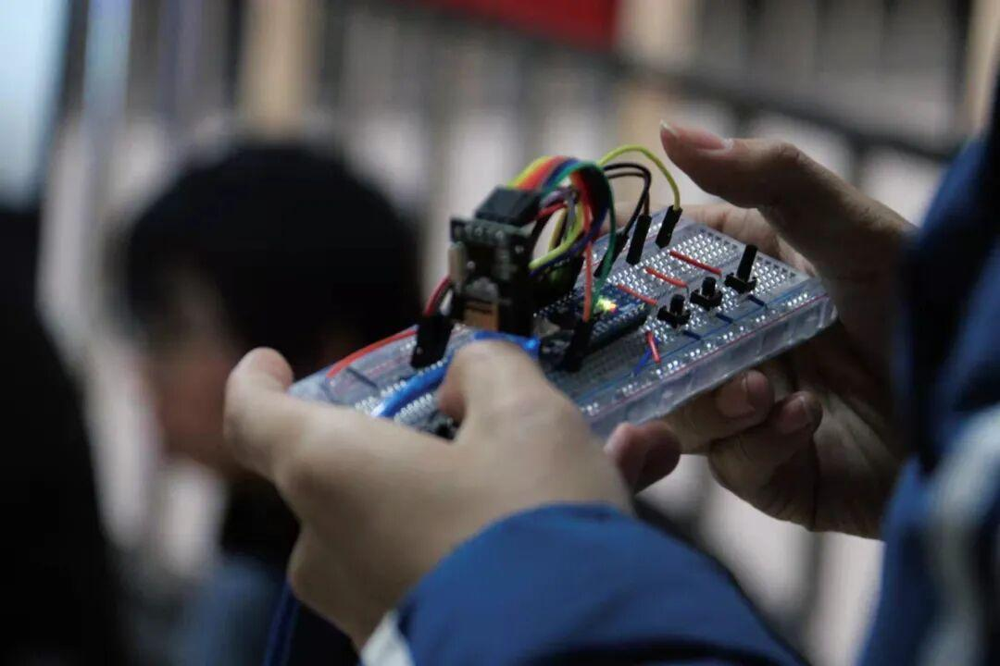
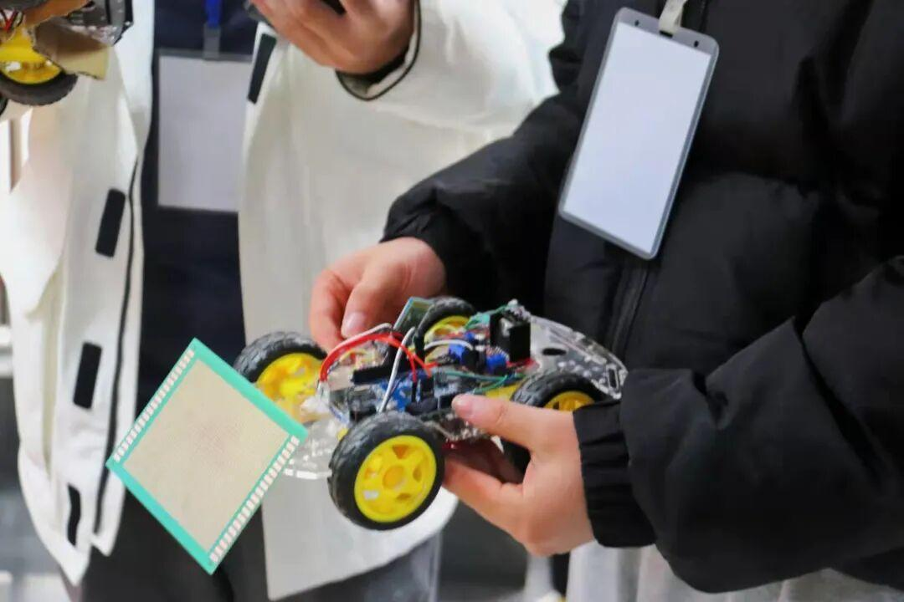
看看选手们帅气的小车
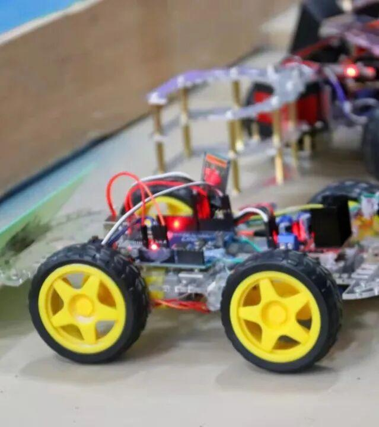
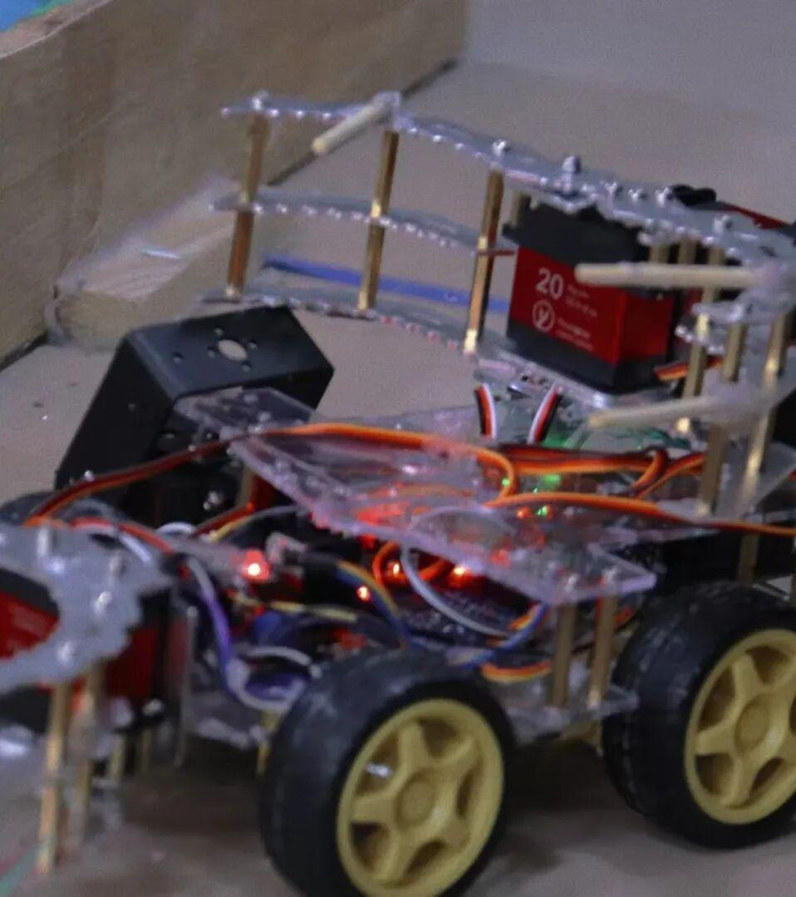
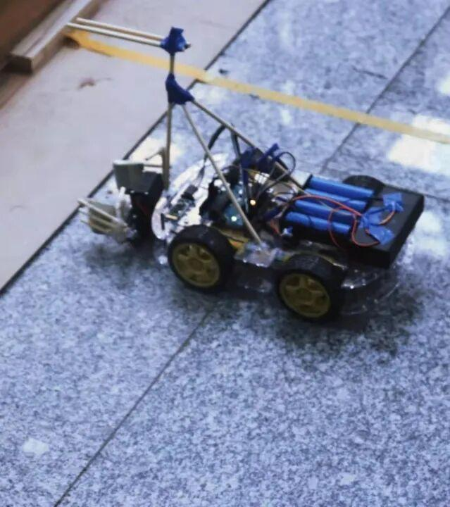
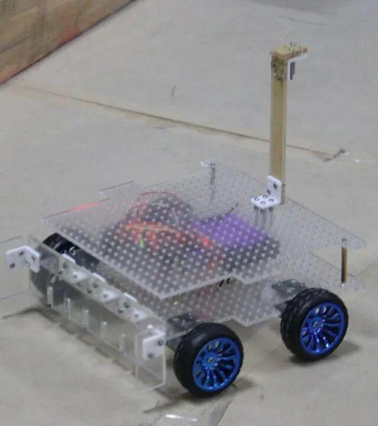
是不是很有趣啊？还有好多好多呢！
左右滑动解锁更多
帅气的小车不一定只有男生制作哦
还有女生呢！
Show
time
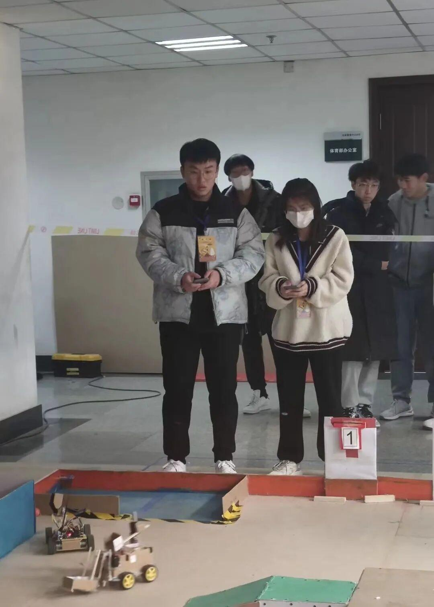
比赛时选手们控制他们的小车在赛场上‘战斗’。这不仅仅是一场技术的较量，也是一场战略的比拼。这不单是一场机器人与机器人的较量，还是一场心灵的博弈。
请滑动解锁
有没有感受到比赛时候的激烈呢？
Part.2
获奖情况
首先恭喜控机二三组获得了冠军
鑫哥和视觉小垃圾们获得亚军
SLJ不要摸鱼队获得季军!
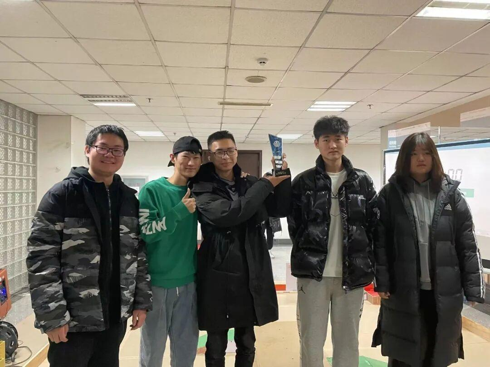
他们用自己精湛的技术与不懈的努力，战胜一个又一个强大的对手，最终在理工杯会当凌绝顶，一览众山小。
这一路上经历了很多，学到了很多知识，也收获了友谊 ，本次比赛并没有遗憾！
同时，本次理工杯大赛能顺利进行，离不开每一位工作人员的辛苦与努力。在这里，我们衷心地感谢两位帅气的解说小哥哥，感谢公平公正尽职尽责的裁判小哥哥，感谢耐心认真计分、录像的小哥哥小姐姐们！
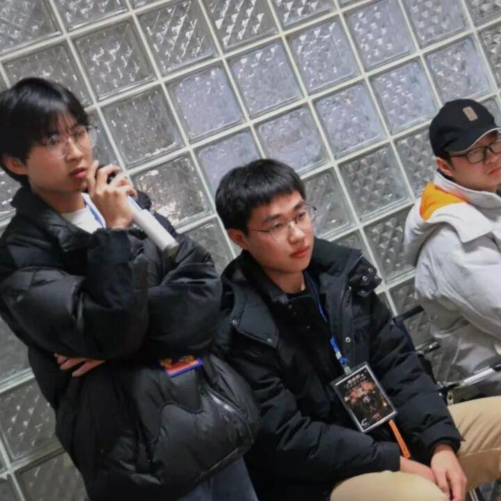
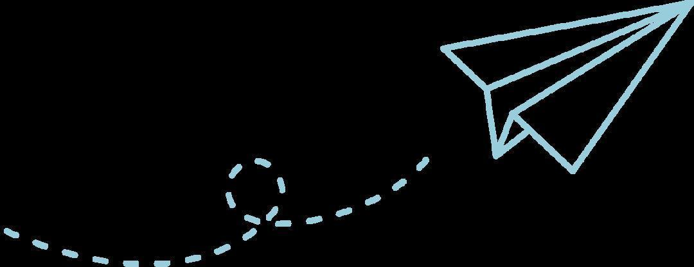
Part.3
大家庭合照
让我们期待下一次的相遇吧！
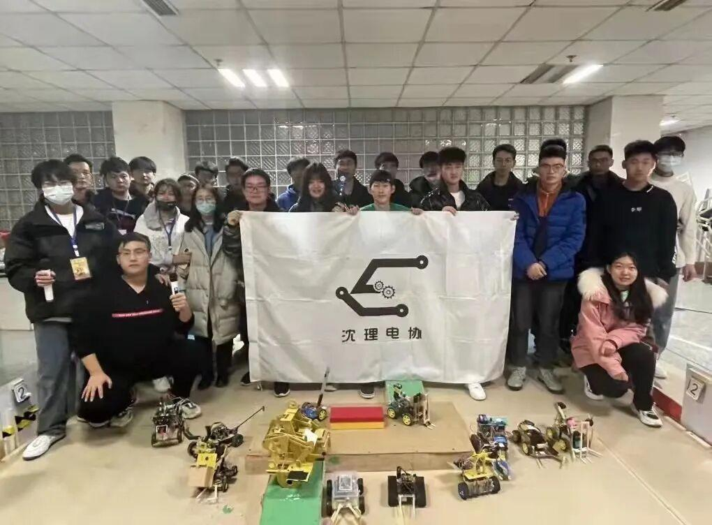
排版｜王虹
文字｜王虹
图片｜信息部